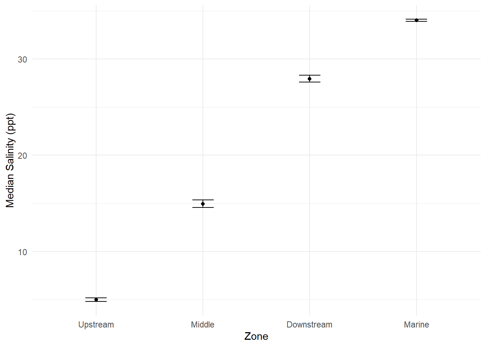
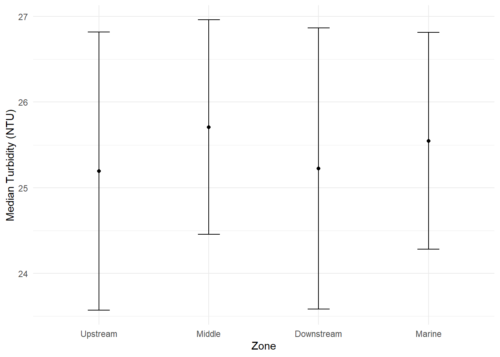
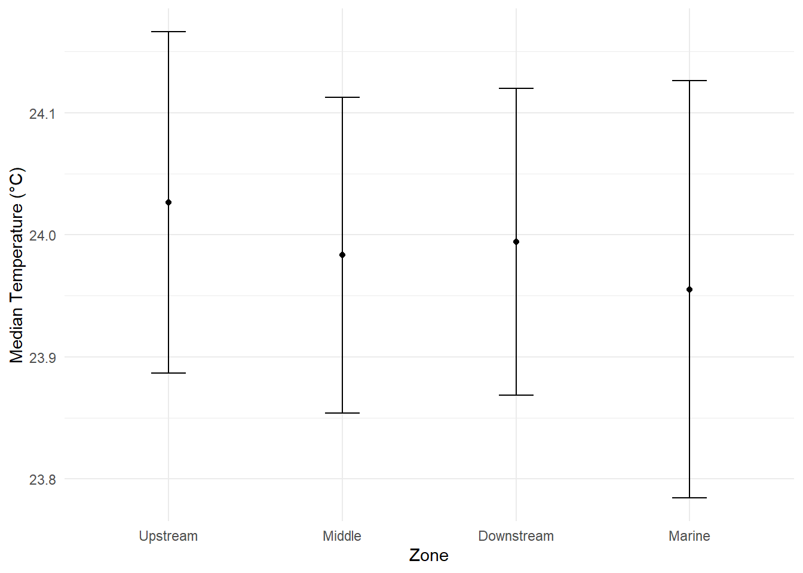
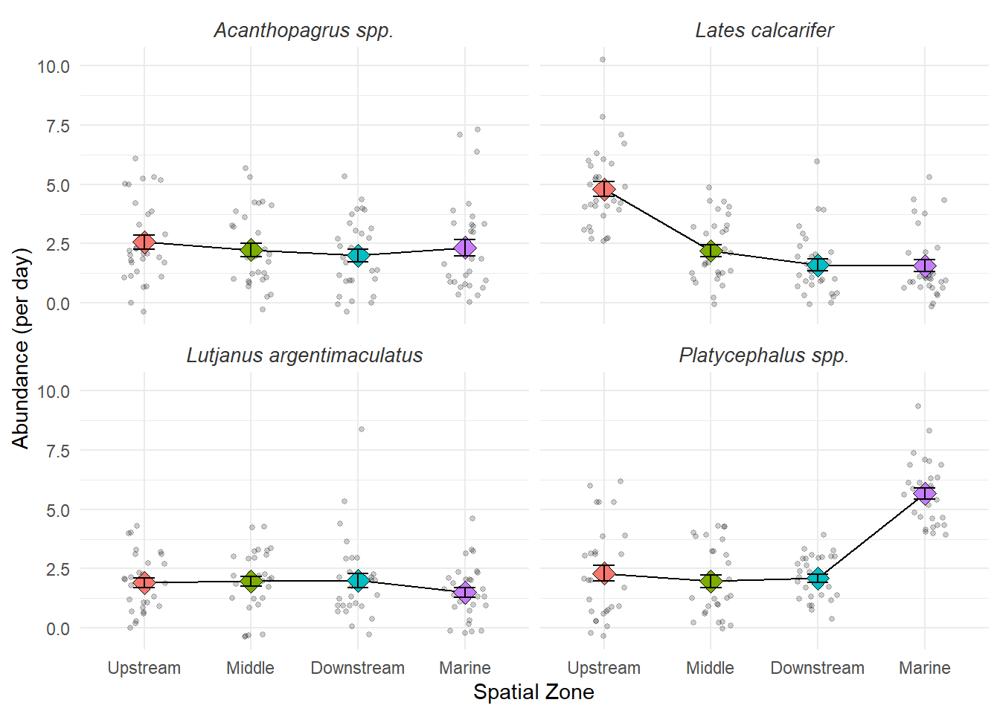

rm(list = ls())R4MS Workshop 2 - Final Exercise
Introduction
Here we are going to wrangle in messy data on the Ross River estuary fish surveys and produce final clean tables and figure. We have 4 separate files that were provided to us by a former PhD student. We know we have data for 4 sites, 4 species, and 30 days of sampling. We also have metadata on the sites and sensor data on the environmental conditions at each site.
Housekeeping
This function removes all objects from the current R environment, effectively clearing it. This is often done at the beginning of a script to ensure that there are no leftover variables or data from previous analyses that could interfere with the current analysis. By starting with a clean environment, we can avoid potential conflicts and ensure that our code runs smoothly without unexpected errors due to existing objects.
Packages
This section loads the necessary R packages for data manipulation, visualization, and reading Excel files. The tidyverse package is a collection of R packages designed for data science, including dplyr for data manipulation, ggplot2 for data visualization, and lubridate for working with dates. The readxl package is specifically used for reading Excel files into R.
library(tidyverse) # Inc dplyr, ggplot2, lubridate etcWarning: package 'tidyverse' was built under R version 4.5.3Warning: package 'ggplot2' was built under R version 4.5.3Warning: package 'tibble' was built under R version 4.5.3Warning: package 'tidyr' was built under R version 4.5.3Warning: package 'readr' was built under R version 4.5.3Warning: package 'purrr' was built under R version 4.5.3Warning: package 'dplyr' was built under R version 4.5.3Warning: package 'forcats' was built under R version 4.5.3Warning: package 'lubridate' was built under R version 4.5.3── Attaching core tidyverse packages ──────────────────────── tidyverse 2.0.0 ──
✔ dplyr 1.2.0 ✔ readr 2.2.0
✔ forcats 1.0.1 ✔ stringr 1.6.0
✔ ggplot2 4.0.2 ✔ tibble 3.3.1
✔ lubridate 1.9.5 ✔ tidyr 1.3.2
✔ purrr 1.2.1
── Conflicts ────────────────────────────────────────── tidyverse_conflicts() ──
✖ dplyr::filter() masks stats::filter()
✖ dplyr::lag() masks stats::lag()
ℹ Use the conflicted package (<http://conflicted.r-lib.org/>) to force all conflicts to become errorslibrary(readxl) # For reading in excel filesWarning: package 'readxl' was built under R version 4.5.3Load files
Main dataset
The catch data is stored across four separate tabs in one Excel file. Each tab contains part of the fish survey catch log, including information about the sampling site, survey date, species caught, and catch count. Before analysis, each tab needs to be loaded separately and then combined into one main dataset.
catch1 <- read_excel(here::here("data/workshop2/estuary_catch_log.xlsx"), sheet = 1)
catch2 <- read_excel(here::here("data/workshop2/estuary_catch_log.xlsx"), sheet = 2)
catch3 <- read_excel(here::here("data/workshop2/estuary_catch_log.xlsx"), sheet = 3)
catch4 <- read_excel(here::here("data/workshop2/estuary_catch_log.xlsx"), sheet = 4)Inspect individual tabs
Here we are looking for anomalies between workbooks and any variable naming issues
The catch log was stored across four separate Excel worksheets. Before combining the datasets, each sheet was inspected to identify inconsistencies in variable names, data structure, and formatting. This step ensures that all worksheets contain compatible columns and reduces the risk of introducing errors during the row-binding process.
catch1# A tibble: 104 × 4
site date species count
<chr> <dttm> <chr> <dbl>
1 Lower_ross 2026-05-01 00:00:00 barramundi 6
2 Lower_ross 2026-05-01 00:00:00 MANGROVE JACK 3
3 Lower_ross 2026-05-01 00:00:00 bream 4
4 Lower_ross 2026-05-01 00:00:00 flathead 2
5 Lower_ross 2026-05-02 00:00:00 barramundi 1
6 Lower_ross 2026-05-02 00:00:00 MANGROVE JACK 1
7 Lower_ross 2026-05-02 00:00:00 bream 3
8 Lower_ross 2026-05-02 00:00:00 flathead 3
9 Lower_ross 2026-05-03 00:00:00 MANGROVE JACK 2
10 Lower_ross 2026-05-03 00:00:00 flathead 3
# ℹ 94 more rowscatch2# A tibble: 106 × 4
site date species count
<chr> <dttm> <chr> <dbl>
1 Mid_Ross 2026-05-01 00:00:00 barramundi 4
2 Mid_Ross 2026-05-01 00:00:00 MANGROVE JACK 2
3 Mid_Ross 2026-05-01 00:00:00 bream 2
4 Mid_Ross 2026-05-01 00:00:00 flathead 3
5 Mid_Ross 2026-05-02 00:00:00 MANGROVE JACK 1
6 Mid_Ross 2026-05-02 00:00:00 bream 2
7 Mid_Ross 2026-05-02 00:00:00 flathead 3
8 Mid_Ross 2026-05-03 00:00:00 barramundi 3
9 Mid_Ross 2026-05-03 00:00:00 MANGROVE JACK 2
10 Mid_Ross 2026-05-03 00:00:00 bream 1
# ℹ 96 more rowscatch3# A tibble: 107 × 4
site date species count
<chr> <dttm> <chr> <dbl>
1 ROSS MOUTH 2026-05-01 00:00:00 barramundi 3
2 ROSS MOUTH 2026-05-01 00:00:00 MANGROVE JACK 2
3 ROSS MOUTH 2026-05-01 00:00:00 flathead 9
4 ROSS MOUTH 2026-05-02 00:00:00 MANGROVE JACK 1
5 ROSS MOUTH 2026-05-02 00:00:00 bream 3
6 ROSS MOUTH 2026-05-02 00:00:00 flathead 4
7 ROSS MOUTH 2026-05-03 00:00:00 barramundi 1
8 ROSS MOUTH 2026-05-03 00:00:00 MANGROVE JACK 1
9 ROSS MOUTH 2026-05-03 00:00:00 bream 2
10 ROSS MOUTH 2026-05-03 00:00:00 flathead 7
# ℹ 97 more rowscatch4# A tibble: 110 × 4
site date species count
<chr> <dttm> <chr> <dbl>
1 Upper Ross 2026-05-01 00:00:00 barramundi 5
2 Upper Ross 2026-05-01 00:00:00 bream 2
3 Upper Ross 2026-05-01 00:00:00 flathead 6
4 Upper Ross 2026-05-02 00:00:00 barramundi 8
5 Upper Ross 2026-05-02 00:00:00 MANGROVE JACK 1
6 Upper Ross 2026-05-02 00:00:00 bream 2
7 Upper Ross 2026-05-02 00:00:00 flathead 4
8 Upper Ross 2026-05-03 00:00:00 barramundi 4
9 Upper Ross 2026-05-03 00:00:00 bream 2
10 Upper Ross 2026-05-04 00:00:00 barramundi 5
# ℹ 100 more rowsWe definitely have var naming issues, but they look to be the same. Will check again once we have combined together # Bind rows together The initial inspection indicated that the worksheets contained the same core variables and a consistent overall structure, making them suitable for merging. However, inconsistencies were observed in site and species naming conventions, which will require further standardisation after the datasets are combined into a single table.
catch_data <- bind_rows(catch1, catch2, catch3, catch4)
# Clean up the environment
rm(catch1, catch2, catch3, catch4) # Clean up the environmentThe four worksheets were combined into a single dataset using bind_rows(). This approach preserves all observations while stacking records from each sampling site into one master catch table for subsequent cleaning and analysis.
Preliminary checks
The preliminary inspection confirmed that the combined catch dataset contained 427 observations and four variables (site, date, species, and count). The date column was successfully imported as a POSIXct date-time object, while site and species were stored as character variables and count as a numeric variable.
Several inconsistencies were identified in the text fields. For example, species names were recorded using different naming conventions (e.g., “MANGROVE JACK” versus “barramundi”), and site names contained a mixture of uppercase and lowercase formatting. These inconsistencies would prevent reliable joins with the metadata and species dictionary tables and therefore require standardisation prior to further analysis.
catch_data# A tibble: 427 × 4
site date species count
<chr> <dttm> <chr> <dbl>
1 Lower_ross 2026-05-01 00:00:00 barramundi 6
2 Lower_ross 2026-05-01 00:00:00 MANGROVE JACK 3
3 Lower_ross 2026-05-01 00:00:00 bream 4
4 Lower_ross 2026-05-01 00:00:00 flathead 2
5 Lower_ross 2026-05-02 00:00:00 barramundi 1
6 Lower_ross 2026-05-02 00:00:00 MANGROVE JACK 1
7 Lower_ross 2026-05-02 00:00:00 bream 3
8 Lower_ross 2026-05-02 00:00:00 flathead 3
9 Lower_ross 2026-05-03 00:00:00 MANGROVE JACK 2
10 Lower_ross 2026-05-03 00:00:00 flathead 3
# ℹ 417 more rowshead(catch_data)# A tibble: 6 × 4
site date species count
<chr> <dttm> <chr> <dbl>
1 Lower_ross 2026-05-01 00:00:00 barramundi 6
2 Lower_ross 2026-05-01 00:00:00 MANGROVE JACK 3
3 Lower_ross 2026-05-01 00:00:00 bream 4
4 Lower_ross 2026-05-01 00:00:00 flathead 2
5 Lower_ross 2026-05-02 00:00:00 barramundi 1
6 Lower_ross 2026-05-02 00:00:00 MANGROVE JACK 1glimpse(catch_data)Rows: 427
Columns: 4
$ site <chr> "Lower_ross", "Lower_ross", "Lower_ross", "Lower_ross", "Lower…
$ date <dttm> 2026-05-01, 2026-05-01, 2026-05-01, 2026-05-01, 2026-05-02, 2…
$ species <chr> "barramundi", "MANGROVE JACK", "bream", "flathead", "barramund…
$ count <dbl> 6, 3, 4, 2, 1, 1, 3, 3, 2, 3, 1, 8, 4, 1, 1, 2, 1, 2, 4, 2, 2,…str(catch_data)tibble [427 × 4] (S3: tbl_df/tbl/data.frame)
$ site : chr [1:427] "Lower_ross" "Lower_ross" "Lower_ross" "Lower_ross" ...
$ date : POSIXct[1:427], format: "2026-05-01" "2026-05-01" ...
$ species: chr [1:427] "barramundi" "MANGROVE JACK" "bream" "flathead" ...
$ count : num [1:427] 6 3 4 2 1 1 3 3 2 3 ...Can’t tell from these outputs how many levels of site and species we have. Two options: let’s check those explicitly by using distinct() or can convert to factors Let’s look at the distinct values first, as we might need to clean before converting to factor vars.
catch_data |>
distinct(site)# A tibble: 4 × 1
site
<chr>
1 Lower_ross
2 Mid_Ross
3 ROSS MOUTH
4 Upper Rosscatch_data |>
distinct(species)# A tibble: 4 × 1
species
<chr>
1 barramundi
2 MANGROVE JACK
3 bream
4 flathead OK, so we have four species in there as well as four sites which look to be located at different points on the Ross River. Sites look like they correspond to select zones on the river estuary but we’ll need to check this against the metadata, once loaded. We also have some issues with the site names and species names which will need to be cleaned before we can join with the metadata and taxonomic dictionary.
Next steps for catch data:
- Fix site names and place in reasonable order.
- Can decide this now or we can load the metadata and ensure consistency
- Fix species names - to do this we’ll need to make consistent and then use the taxonomic dictionary to translate to scientific names.
First we’ll need to load the metadata and see what that has in store for us!
Load metadata
metadata <- read_csv(here::here("data/workshop2/estuary_metadata.csv"))Rows: 4 Columns: 4
── Column specification ────────────────────────────────────────────────────────
Delimiter: ","
chr (2): site_name, zone
dbl (2): lat, lon
ℹ Use `spec()` to retrieve the full column specification for this data.
ℹ Specify the column types or set `show_col_types = FALSE` to quiet this message.Checks
head(metadata)# A tibble: 4 × 4
site_name lat lon zone
<chr> <dbl> <dbl> <chr>
1 Upper_Ross -19.3 147. Upstream
2 mid_ross -19.3 147. Middle
3 LOWER ROSS -19.3 147. Downstream
4 ross_mouth -19.2 147. Marine glimpse(metadata)Rows: 4
Columns: 4
$ site_name <chr> "Upper_Ross", "mid_ross", "LOWER ROSS", "ross_mouth"
$ lat <dbl> -19.31, -19.28, -19.26, -19.25
$ lon <dbl> 146.74, 146.78, 146.81, 146.83
$ zone <chr> "Upstream", "Middle", "Downstream", "Marine"Site names are all over the place in the metadata too - will need to standardise in both of these tbls before we can combine them
Fix site names in data and metadata and convert character to factor variables
this will make it easier to join the two datasets together and also for plotting later on. We’ll also convert all character variables to factors, which is a common practice in R for categorical data. This conversion can improve performance in certain operations and is often necessary for statistical modeling and plotting.
catch_data <- catch_data |>
mutate(
site = str_to_lower(str_trim(site)),
site = str_replace_all(site, " ", "_")) |>
# Convert all chr to fct
mutate(across(where(is.character), as_factor)
)
metadata <- metadata |>
mutate(
site_name = str_to_lower(str_trim(site_name)),
site_name = str_replace_all(site_name, " ", "_")) |>
# Convert all chr to fct
mutate(across(where(is.character), as_factor)
)Recheck
Recheck the site names in both datasets to ensure they have been standardised correctly. This step is crucial for ensuring that the subsequent join operation between the catch data and metadata will work as intended, without mismatches due to inconsistent naming.
catch_data |>
str()tibble [427 × 4] (S3: tbl_df/tbl/data.frame)
$ site : Factor w/ 4 levels "lower_ross","mid_ross",..: 1 1 1 1 1 1 1 1 1 1 ...
$ date : POSIXct[1:427], format: "2026-05-01" "2026-05-01" ...
$ species: Factor w/ 4 levels "barramundi","MANGROVE JACK",..: 1 2 3 4 1 2 3 4 2 4 ...
$ count : num [1:427] 6 3 4 2 1 1 3 3 2 3 ...# catch_data |>
# distinct(site)
str(metadata)tibble [4 × 4] (S3: tbl_df/tbl/data.frame)
$ site_name: Factor w/ 4 levels "upper_ross","mid_ross",..: 1 2 3 4
$ lat : num [1:4] -19.3 -19.3 -19.3 -19.2
$ lon : num [1:4] 147 147 147 147
$ zone : Factor w/ 4 levels "Upstream","Middle",..: 1 2 3 4OK site names fixed in both now (but note the vars themselves still have different names - site vs site_name). We can fix this when we join the datasets together. Next we need to do something about the species names. Can use the taxonomic dictionary to get scientific names for the species.
Load Taxonomic Dictionary
species_dict <- read_csv(here::here("data/workshop2/estuary_metadata.csv"))Rows: 4 Columns: 4
── Column specification ────────────────────────────────────────────────────────
Delimiter: ","
chr (2): site_name, zone
dbl (2): lat, lon
ℹ Use `spec()` to retrieve the full column specification for this data.
ℹ Specify the column types or set `show_col_types = FALSE` to quiet this message.# Check
head(species_dict)# A tibble: 4 × 4
site_name lat lon zone
<chr> <dbl> <dbl> <chr>
1 Upper_Ross -19.3 147. Upstream
2 mid_ross -19.3 147. Middle
3 LOWER ROSS -19.3 147. Downstream
4 ross_mouth -19.2 147. Marine We’ll need to check the common names in the catch log match those in the taxonomic dictionary before we do the join.
library(readr)
species_dict <- read_csv(
here::here("data/workshop2/species_dictionary.csv")
)Rows: 4 Columns: 2
── Column specification ────────────────────────────────────────────────────────
Delimiter: ","
chr (2): common_name, scientific_name
ℹ Use `spec()` to retrieve the full column specification for this data.
ℹ Specify the column types or set `show_col_types = FALSE` to quiet this message.catch_data |>
distinct(species)# A tibble: 4 × 1
species
<fct>
1 barramundi
2 MANGROVE JACK
3 bream
4 flathead # Can see these are different to the dictionary
species_dict |>
distinct(common_name)# A tibble: 4 × 1
common_name
<chr>
1 barramundi
2 mangrove_jack
3 bream
4 flathead Standardise species (common name) variable in the catch log to match dictionary
catch_data <- catch_data |>
mutate(
species = str_to_lower(str_trim(species)),
species = str_replace_all(species, " ", "_")
)Create new variable (“scientific_name”) in catch log by joining with taxonomic dictionary
catch_data <- catch_data |>
mutate(common_name = species) |>
left_join(species_dict, by = join_by(common_name))OK so let’s check our catch log again. SHould have species and site names fixed
glimpse(catch_data)Rows: 427
Columns: 6
$ site <fct> lower_ross, lower_ross, lower_ross, lower_ross, lower_…
$ date <dttm> 2026-05-01, 2026-05-01, 2026-05-01, 2026-05-01, 2026-…
$ species <chr> "barramundi", "mangrove_jack", "bream", "flathead", "b…
$ count <dbl> 6, 3, 4, 2, 1, 1, 3, 3, 2, 3, 1, 8, 4, 1, 1, 2, 1, 2, …
$ common_name <chr> "barramundi", "mangrove_jack", "bream", "flathead", "b…
$ scientific_name <chr> "Lates calcarifer", "Lutjanus argentimaculatus", "Acan…Yep we are good.
We know we need to add the metadata in, but we also have this dataset with sonde/sensor information in it
Load the sonde data
(Code for this is written in separate script which we can source from here)
source(here::here("code/diw_sensor.R"))Rows: 11520 Columns: 5
── Column specification ────────────────────────────────────────────────────────
Delimiter: ","
chr (2): site, timestamp
dbl (3): temperature, salinity, turbidity
ℹ Use `spec()` to retrieve the full column specification for this data.
ℹ Specify the column types or set `show_col_types = FALSE` to quiet this message.spc_tbl_ [11,520 × 5] (S3: spec_tbl_df/tbl_df/tbl/data.frame)
$ site : chr [1:11520] "upper_ross" "mid_ross" "lower_ross" "ross_mouth" ...
$ timestamp : chr [1:11520] "01/05/2026 00:00" "01/05/2026 00:00" "01/05/2026 00:00" "01/05/2026 00:00" ...
$ temperature: num [1:11520] 23.7 24.1 24.2 24.6 26.1 ...
$ salinity : num [1:11520] 4.05 15.74 28.93 33.89 3.96 ...
$ turbidity : num [1:11520] 6.49 49.22 48.14 49.81 25.18 ...
- attr(*, "spec")=
.. cols(
.. site = col_character(),
.. timestamp = col_character(),
.. temperature = col_double(),
.. salinity = col_double(),
.. turbidity = col_double()
.. )
- attr(*, "problems")=<externalptr>
Rows: 11,520
Columns: 5
$ site <chr> "upper_ross", "mid_ross", "lower_ross", "ross_mouth", "upp…
$ timestamp <chr> "01/05/2026 00:00", "01/05/2026 00:00", "01/05/2026 00:00"…
$ temperature <dbl> 23.71379, 24.13302, 24.23558, 24.64147, 26.06955, 24.62576…
$ salinity <dbl> 4.054812, 15.742962, 28.934938, 33.891350, 3.962750, 12.05…
$ turbidity <dbl> 6.489046, 49.216967, 48.135752, 49.811493, 25.184739, 34.8…Notes on sensor data
- We had 15-minute sonde data for the same 4 sites and 30 days of sampling. The script sourced above turned into daily data and removed outliers
- There are three different environmental vars measured: temperature, salinity, and turbidity.
- Could investigate effects of all three on fish spp abundance or pick one? Need to think about prior research and hypotheses etc.
OK, now we can join catch data with metadata and sensor data
catch_data_final <- catch_data |>
left_join(metadata, by = join_by(site == site_name)) |>
left_join(sensor_daily, by = join_by(site, date))Check
glimpse(catch_data_final)Rows: 427
Columns: 12
$ site <chr> "lower_ross", "lower_ross", "lower_ross", "lower_ross"…
$ date <dttm> 2026-05-01, 2026-05-01, 2026-05-01, 2026-05-01, 2026-…
$ species <chr> "barramundi", "mangrove_jack", "bream", "flathead", "b…
$ count <dbl> 6, 3, 4, 2, 1, 1, 3, 3, 2, 3, 1, 8, 4, 1, 1, 2, 1, 2, …
$ common_name <chr> "barramundi", "mangrove_jack", "bream", "flathead", "b…
$ scientific_name <chr> "Lates calcarifer", "Lutjanus argentimaculatus", "Acan…
$ lat <dbl> -19.26, -19.26, -19.26, -19.26, -19.26, -19.26, -19.26…
$ lon <dbl> 146.81, 146.81, 146.81, 146.81, 146.81, 146.81, 146.81…
$ zone <fct> Downstream, Downstream, Downstream, Downstream, Downst…
$ mean_temp <dbl> 23.79137, 23.79137, 23.79137, 23.79137, 23.98099, 23.9…
$ mean_salinity <dbl> 28.35281, 28.35281, 28.35281, 28.35281, 27.74122, 27.7…
$ mean_turbidity <dbl> 27.90740, 27.90740, 27.90740, 27.90740, 24.09800, 24.0…OK starting to look good now!
But we only have 427 rows of data - doesn’t seem right.. How many should we have?
4 x spp 4 x sites 30 surveys
4430
480!!
There are some days where there were zero counts of certain species at different sites. We’ll need to wrangle these into a complete dataset with 480 rows, where the zero counts are explicitly represented as 0 rather than NA. This is important for our subsequent analyses and visualisations, as we want to be able to distinguish between true absences (0) and missing data (NA).
Wrangle final dataset
catch_data_final <-
catch_data_final |>
complete(
nesting(site, date,
# lat, lon,
zone, mean_temp, mean_salinity, mean_turbidity),
scientific_name
) |>
mutate(
# Convert the resulting NA counts to 0
count = coalesce(count, 0)
)======== MAIN DATA WRANGLE DONE!! ========
Now we can start thinking about hypotheses and what might be going on in the ecology of these species in this ecosystem
First we probably want to first check that there is an actual difference in env vars among zones
Salinity
# Let's make a table
sal_sum <-
catch_data_final |>
group_by(zone) |>
summarise(
# sem_salinity = sd(mean_salinity) / sqrt(n()),
sd_salinity = sd(mean_salinity, na.rm = TRUE),
median_salinity = median(mean_salinity, na.rm = TRUE),
.groups = "drop"
)
# And from this a plot
sal_sum |>
ggplot(aes(x = zone, y = median_salinity)) +
geom_point() +
geom_errorbar(aes(ymin = median_salinity - sd_salinity, ymax = median_salinity + sd_salinity), width = 0.2) +
theme_minimal() +
labs(#title = "Median Salinity by Zone with Standard Deviation Error Bars",
x = "Zone",
y = "Median Salinity (ppt)")
Definitely differences in salinity, as we’d expect!! And we know there has been work on some of these species about responses to salinity gradients.
Let’s check the other two env vars too, just to be sure.
Turbidity
turb_sum <-
catch_data_final |>
group_by(zone) |>
summarise(
sd_turbidity = sd(mean_turbidity, na.rm = TRUE),
median_turbidity = median(mean_turbidity, na.rm = TRUE),
.groups = "drop"
)
turb_sum |>
ggplot(aes(x = zone, y = median_turbidity)) +
geom_point() +
geom_errorbar(aes(ymin = median_turbidity - sd_turbidity, ymax = median_turbidity + sd_turbidity), width = 0.2) +
theme_minimal() +
labs(#title = "Median Turbidity by Zone with Standard Deviation Error Bars",
x = "Zone",
y = "Median Turbidity (NTU)")
And temperature
temp_sum <-
catch_data_final |>
group_by(zone) |>
summarise(
sd_temperature = sd(mean_temp, na.rm = TRUE),
median_temperature = median(mean_temp, na.rm = TRUE),
.groups = "drop"
)
temp_sum |>
ggplot(aes(x = zone, y = median_temperature)) +
geom_point() +
geom_errorbar(aes(ymin = median_temperature - sd_temperature, ymax = median_temperature + sd_temperature), width = 0.2) +
theme_minimal() +
labs(#title = "Median Temperature by Zone with Standard Deviation Error Bars",
x = "Zone",
y = "Median Temperature (°C)")
OK so we’ll continue with salinity as our main env var of interest, but we know that there are also differences in turbidity and temperature across the zones, which could also be influencing fish abundance patterns. We can discuss this in the interpretation of our results and consider potential confounding effects of these other environmental variables in our discussion.
Remake salinity plot nicely for publication
sal_sum |>
ggplot(aes(x = zone, y = median_salinity)) +
geom_point() +
geom_errorbar(aes(ymin = median_salinity - sd_salinity, ymax = median_salinity + sd_salinity), width = 0.2) +
theme_minimal() +
labs(#title = "Median Salinity by Zone with Standard Deviation Error Bars",
x = "Zone",
y = "Median Salinity (ppt)")
Now we can turn to patterns in fish abundance
Calculate summary stats
fish_stats <- catch_data_final |>
group_by(zone, scientific_name) |>
summarise(
mean_catch = mean(count),
sem_catch = sd(count) / sqrt(n()),
.groups = "drop"
)And plot
fish_stats |>
ggplot(aes(x = zone, y = mean_catch, fill = zone)) +
geom_line(group = 1) +
# add in points from master data
geom_point(data = catch_data_final, aes(x = zone, y = count),
position = position_jitter(width = 0.2), alpha = 0.2, size = 1, inherit.aes = FALSE) +
geom_point(position = "dodge", size = 4, pch = 23) +
geom_errorbar(aes(ymin = mean_catch - sem_catch, ymax = mean_catch + sem_catch),
position = position_dodge(0.9), width = 0.2) +
facet_wrap(~ scientific_name, scales = "fixed") +
theme_minimal() +
theme(
strip.text = element_text(face = "italic", size = 10, colour = "grey20"),
# legend.position = "bottom"
legend.position = "none"
) +
labs(
#title = "Predatory Fish Abundance across Estuarine Salinity Gradients",
#subtitle = "Ross River Estuary System, May 2026",
x = "Spatial Zone",
y = "Abundance (per day)",
fill = "Spatial Zone"
)Warning: Width not defined
ℹ Set with `position_dodge(width = ...)`